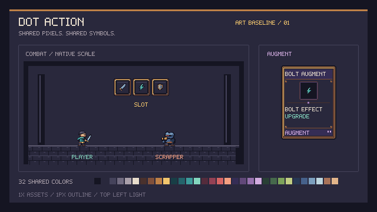

Tracefolio REPORTS & ISSUES
Tracefolio REPORTS & ISSUES 캠프 가디언수정사항
캠프 가디언수정사항Assets 내부의 중복 DotAction 폴더 제거와 경로 정리
검증 대기아트·데이터·씬을 Assets 용도별 폴더로 옮기고 코드는 Scripts에 정리했습니다. 메타 81개의 GUID와 해시를 보존했습니다.
작업 결과
Assets/DotAction 중복 상위 폴더를 제거했습니다. Animation·Art·Data·Materials·Prefabs는 Assets 아래로, Runtime·Editor는 Assets/Scripts 아래로 이동했습니다. 두 씬은 기존 Assets/Scenes에 합쳤습니다. TurnRoom·polyperfect와 기존 SampleScene은 보존했습니다.

변경 내용
적용 내용
변경 전후 구조
전: Assets/DotAction/{Animation,Art,Data,Editor,Materials,Prefabs,Runtime,Scenes}
후: Assets/{Animation,Art,Data,Materials,Prefabs,Scenes}
Assets/Scripts/{Editor,Runtime}
기존 AssetDatabase 이동 도구를 준비했으나 열린 Unity가 백그라운드에서 새 요청을 처리하지 않아 도구와 요청 파일을 정리하고 파일·메타를 함께 이동했습니다. 작업 전 절대 경로와 충돌을 검사하고 빈 폴더만 제거했습니다.
스프라이트 가져오기, Sprite Studio 시트 빌더, 전투 데이터/씬 구성, 아트 동기화와 현재 문서의 경로를 새 구조로 갱신했습니다. 네임스페이스와 어셈블리 이름은 유지합니다. 과거 결과 보고의 당시 경로는 기록으로 보존합니다.
flowchart LR A[기존 에셋과 메타 목록 기록] --> B[대상 경로와 충돌 확인] B --> C[폴더와 메타 함께 이동] C --> D[기존 Scenes에 파일 합치기] D --> E[코드와 빌드 씬 경로 갱신] E --> F[GUID와 해시 대조]
대화 기록
사용자는 프로젝트 이름과 같은 내부 폴더가 불필요하므로 정리를 요청했습니다. 용도별 폴더를 Assets에 배치하고 코드만 Scripts에 모았습니다.
프로젝트 지침에 프로젝트 이름을 반복하는 래퍼 폴더를 만들지 않는 규칙을 추가했습니다. 전역 지침은 변경하지 않았습니다. Unity 샘플 환류는 제품 폴더 정리이므로 보류했습니다.
검증
이동 전 .meta 목록을 기록하고 이동 후 81개 파일의 GUID·SHA256이 모두 같은지 대조했습니다. 오류는 0개입니다. 기존 Scenes와 합치며 중복 폴더 자체의 메타 1개는 제거했으며 씬 파일의 메타는 보존했습니다. Assets/DotAction이 없는 것을 확인했습니다. 빌드 씬 경로 Assets/Scenes/PixelCombat.unity와 Assets/Scenes/ArtReference.unity가 모두 존재합니다. 현재 소스·도구·문서에서 과거 경로가 남지 않은 것을 rg로 확인했습니다.
이동 전 목록 · 이동 후 대조 · 문자열 경로 수정 목록
자동 테스트는 작성·실행하지 않았습니다. 현재 열린 에디터를 종료·재시작하지 않았습니다. Unity의 재가져오기·재컴파일 결과는 아직 미확인입니다.
Unity 창의 비활성 상태 캡처는 대상 앱을 정확히 촬영하지 못해 폐기했습니다. 포커스를 바꾸어 사용자 작업을 방해하지 않았으며 폴더 정리의 실제 전후 화면은 미확보입니다. 대표 아트 이미지는 화면 증거로 사용하지 않습니다.
남은 사항
열린 Unity가 새 경로를 재가져온 후 컴파일·씬 표시 확인이 남아 있습니다. 게임 소스 커밋·푸시는 하지 않았으며 결과 보고서만 중앙 저장소에 게시합니다. 다른 작업의 에셋과 열린 씬은 보존했습니다.
작업 시간
- 제안 시간: 5
10분; 폴더 정리 후 보고서 공개 확인 24분 추가 안내 - 실제로 완료된 시간: 7분 35초; 시작 2026-11-16 17:42:36 KST, 정리·정적 대조 완료 및 보고서 작성 2026-11-16 17:50:10 KST. 공개 배포 확인 시간은 별도입니다.
- XERJ: 미사용 — 연결 확인·호출 없음. 검색은 rg 사용.